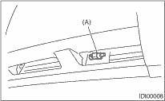

INSTRUMENTATION/DRIVER INFO > Ambient Sensor
REMOVAL
1. Disconnect the ground cable from the battery.
2. Disconnect the ambient sensor connector.
3. Remove the ambient sensor (A) from the radiator lower panel.
